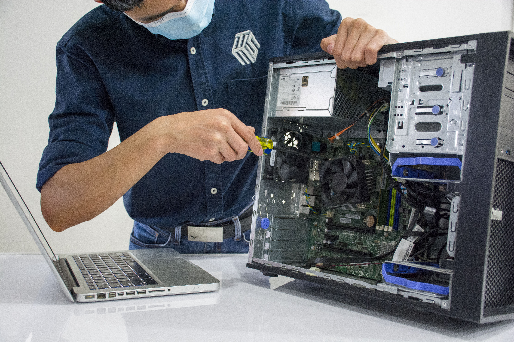

ASSISTÊNCIA INFORMÁTICA
A KambaTech ajuda-te a resolver problemas informáticos com soluções práticas para os teus equipamentos. Queremos tornar a tecnologia mais simples, segura e acessível.
Desde a instalação de programas até à manutenção de computadores, estamos aqui para te ajudar a manter tudo a funcionar.
Pedir Assistência Conhecer os Serviços
Soluções informáticas para estudar, trabalhar e utilizar os teus equipamentos com mais confiança.
Ajudamos a identificar problemas de hardware e software e a encontrar soluções para recuperar o funcionamento do computador.
Instalamos e configuramos programas úteis para os estudos, o trabalho e as tarefas do dia a dia.
Ajudamos a identificar ameaças comuns e a adotar hábitos que protegem os equipamentos e os dados.
A limpeza e as verificações regulares ajudam a manter os equipamentos em boas condições.
A KambaTech é um projeto de empresa de assistência informática desenvolvido no âmbito da disciplina de TLP.
Valorizamos a responsabilidade, a confiança, a qualidade e a aprendizagem contínua.
Saber mais sobre nósNão deixes que um problema com o computador atrapalhe os teus estudos ou o teu trabalho. Entra em contacto connosco e explica de que tipo de assistência precisas.
Entrar em contacto